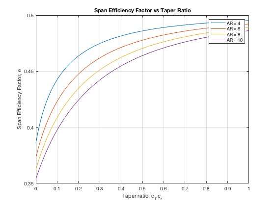
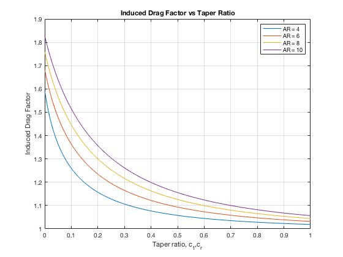

Contents
ASEN 3111 - Computational Assignment 04 - Main
Flow Over Thick Airfoils
Author: Margaux McFarland Collaborators: Date: 11/21/19
clc;
clear;
close all;
Problem 1/2
%givens b = 30.48; %span, m c_r = 4.572; %chord at root, m c_t = 1.524; %chord at tip, m geo_t = 0;%AoA at tip, degrees geo_r = 5; %AoA at root, degrees % the following data is from my comp assignment 3 aero_t = 0; %zero-lift AoA at tip (NACA 0012), degrees aero_r = -2; %zero-lift AoA at root(NACA 2412), degrees a0_t = 5.055344; %lift slope at tip (NACA 0012) a0_r = 5.055298; %lift slope at root (NACA 2412) rho = 1.225; %air density, kg/m^3 V = 67.056; %m/s S = (c_r + c_t)*b/2; %try with a high number of terms for the actual values N = 500; %number of terms [e_actual,c_L_actual,c_Di_actual] = PLLT(b,a0_t,a0_r,c_t,c_r,aero_t,aero_r,geo_t,geo_r,N); %display values for lift and induced drag L = 0.5*rho*V^2*S*c_L_actual; Di = 0.5*rho*V^2*S*c_Di_actual; fprintf("Lift: %d\n", L); fprintf("Induced Drag: %d\n", Di); fprintf("---------------------------------------------------------\n"); %error panels = 1:100; for i = 1:length(panels) %loop through number of terms [e,c_L,c_Di] = PLLT(b,a0_t,a0_r,c_t,c_r,aero_t,aero_r,geo_t,geo_r,i); error(i) = abs(c_Di - c_Di_actual)/c_Di_actual; end % 5 percent error index = find(error <= 0.5, 1); fprintf("Minimum number of Panels for 5 percent relative error: %d\n", panels(index)); % 1 percent error index = find(error <= 0.01, 1); fprintf("Minimum number of Panels for 1 percent relative error: %d\n", panels(index)); % 1/10 percent error index = find(error <= 0.001, 1); fprintf("Minimum number of Panels for 0.1 percent relative error: %d\n", panels(index));
Lift: 7.860579e+04 Induced Drag: 1.787990e+03 --------------------------------------------------------- Minimum number of Panels for 5 percent relative error: 3 Minimum number of Panels for 1 percent relative error: 14 Minimum number of Panels for 0.1 percent relative error: 44
Problem 3 - thin wing (thin airfoil theory)
%thin aifoil-lift slope is 2pi a0_t = 2*pi; %lift slope at tip a0_r = 2*pi; %lift slope at root geo_t = 5;%AoA at tip, degrees geo_r = 5; %AoA at root, degrees aero_t = 0; %zero-lift AoA at tip, degrees aero_r = 0; %zero-lift AoA at root, degrees c_t = 1; %chord at tip, meters taper_ratio = linspace(0,1,100); c_r = c_t.*taper_ratio; %chords at root, meters, increases to increase taper ratio AR = [4 6 8 10]; %aspect ratios N = 20; %loop through each aspect ratio for i = 1:length(AR) %loop through each root chord for j = 1:length(c_r) %calculate the span for each root/tip chord (area of trapezoid) b = (c_r(j) + c_t)*AR(i)/2; [e(i,j),c_L,c_Di] = PLLT(b,a0_t,a0_r,c_t,c_r(j),aero_t,aero_r,geo_t,geo_r,N); end end %plot e vs taper ratio for each AR figure(1) plot(taper_ratio,e); xlabel('Taper ratio, c_t,c_r'); ylabel('Span Efficiency Factor, e'); title('Span Efficiency Factor vs Taper Ratio'); legend('AR = 4', 'AR = 6', 'AR = 8', 'AR = 10'); grid on %plot induced drag factor vs taper ratio to match with graph in Anderson figure(2) plot(taper_ratio,e.^-1 - 1); xlabel('Taper ratio, c_t,c_r'); ylabel('Induced Drag Factor'); title('Induced Drag Factor vs Taper Ratio'); legend('AR = 4', 'AR = 6', 'AR = 8', 'AR = 10'); grid on 
Functions Called
The following functions were built and called as apart of this assignment.
function [e,c_L,c_Di] = PLLT(b,a0_t,a0_r,c_t,c_r,aero_t,aero_r,geo_t,geo_r,N) %PLLT solves the fundamental equation of Prandtl Lifting Line Theory for %finite wings with thick airfoilf % This function returns the coefficient of lift, coefficient of % drag, and span efficieny given the span, the cross-sectional lift % slope at the tip and root(per radian), the chord at the tip and root % (in ft), the zero-lift AoA at the tip and root (in degrees), geometric angle of % attack at the tip and root(degrees), and N the number of off Fourier % terms % % Author: Margaux McFarland % Collaborators: % Date: 10/25/19 %givens V_inf = 67.056; %m/s %convert angles to radians geo_t = deg2rad(geo_t); geo_r = deg2rad(geo_r); aero_t = deg2rad(aero_t); aero_r = deg2rad(aero_r); %get vecotr of all odd terms n = linspace(1,N,N); odd = 2*n-1; for i = 1:N theta(i) = (n(i)*pi)/(2*N); end %get lift slopes/chords/geo/zero lift AoAs in vector form a0 = a0_r+(a0_r-a0_t).*-cos(theta); geo = geo_r+(geo_r-geo_t).*-cos(theta); c = c_r+(c_r-c_t).*-cos(theta); aero = aero_r+(aero_r-aero_t).*-cos(theta); %B matrix B = geo-aero; %solve for the Fourier coefficients for i = 1:N %loop through each theta for j = 1:length(odd) % loop through each odd term %A matrix A(i,j) = (((4*b)/(a0(i)*c(i)))*sin(theta(n(i)) *odd(j))... + (odd(j).* sin(theta(n(i)).*odd(j)))./sin(theta(n(i)))); end end %matrix of Fourier coefficients X = A\B'; S = (c_r + c_t)*(b/2); %planform area, m^2 AR = b^2/S; %aspect ratio %coefficient of lift c_L = X(1)*pi*AR; %find span efficiency factor for i = 1:length(X) delta(i) = n(i).*(X(i)/X(1))^2; end e = 1./(1+sum(delta)); %coefficient of drag c_Di = c_L^2 /(pi*AR*e); end